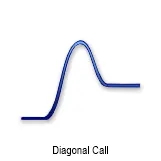
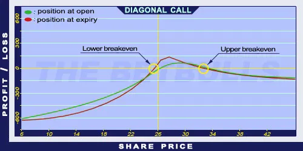

Description and use

Diagonal Call is almost like Covered Call position, but the shares are replaced with a long-duration ITM Long Call option. With this step, the costs are significantly lower. The position shorted should be short-term and OTM. The profit is maximized when the shares are sold on the strike price of the shorted Call option at expiration. The direction of the market is increasing. The investment is characterised by net debit, because the purchased Call options cost more than the sold Call options. It is a safe investment if the Long Call’s expiration is far (back) and the Short Call’s expiration is close (front), usually monthly.
- Type: Bullish
- Transaction type: Debit
- Maximum profit: Limited
- Maximum loss: Limited
- Strategy: Income strategy
Opening the Position
Diagonal Call Option Positions
- Buy a long term, lower strike (ITM) Call option.
- Sell a short term, higher strike Call option.
Steps
Entry:
- Make sure the trend is ascending or stagnating at a certain level.
Exit:
- If the share closes above the strike price at expiration then the Call option is exercised automatically, the shares are delivered and the profit is going to be the received premium.
- If the share price is below the strike price but above the Stop Loss at expiration, then the Short Call option should be left to expire worthless and the received premium should be kept.
- If the share price is below the Stop Loss at expiration then the Long Call option should be sold or the trader should start trading in opposite position.
Basic Characteristics
- Maximum loss: Limited. Cannot be more than the paid debit.
- Maximum profit: Value of Long Call (at the expiry of the Short Call) - net debit.
- Time decay: Time decay has a mixed effect on the value.
- Lower breakeven point: At the expiry of Short Call, it is the function of the Long Call’s value.
- Upper breakeven point: At the expiry of Short Call, it is the function of the Long Call’s value.
Advantages and Disadvantages
Advantages:
- Income on a monthly basis.
- The potential return is larger than for a Covered Call strategy.
- The investor can profit from share prices moving within given limits as well.
Disadvantages:
- In case of increasing share prices, it has an upper limit.
- In case of large increase in share prices, it can generate losses.
Closing the Position
Details on how to close the position by buying back the Short Call options and selling the Long Call options, along with mitigation of losses.
Example

Diagonal Call strategy example
- ABCD is traded for $26.00 on 19.03.2017. The historical volatility is 40%. The investor buys a Long Call option which has a strike price of $25.00, expires in January 2018. and costs $6.60 (premium). Then, sells a Short Call option which has a strike price of $27.50, expires in January 2003. and costs $0.55 (premium).
- Price of the underlying (share price): S= $26.00
- Premium (Short Call): SC= $0.55
- Premium (Long Call): LC= $6.60
- Strike price (Short Call): KS= $27.50
- Strike price (Long Call): KL= $25.00
- Net debit: ND
- Maximum loss: R
- Maximum profit: Pr
- Breakeven point: BEP
Cannot be calculated numerically!